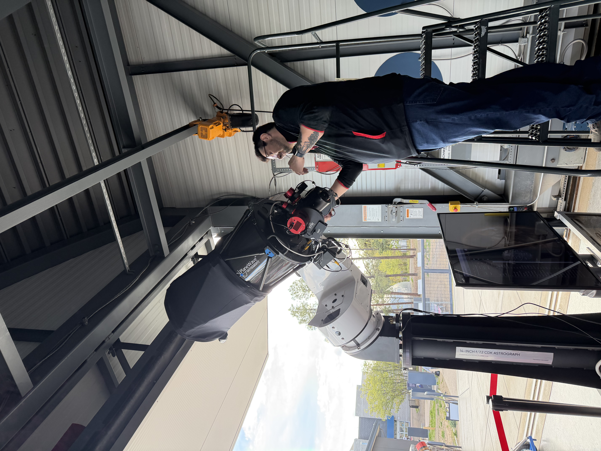
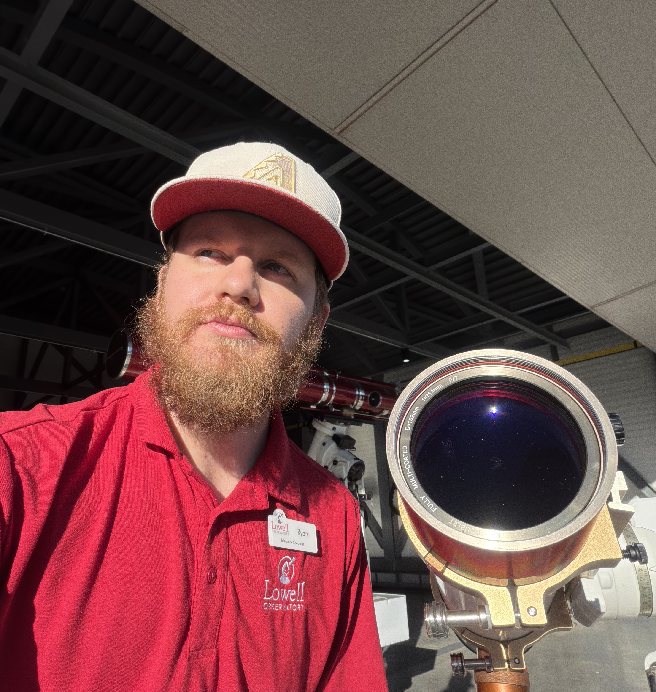
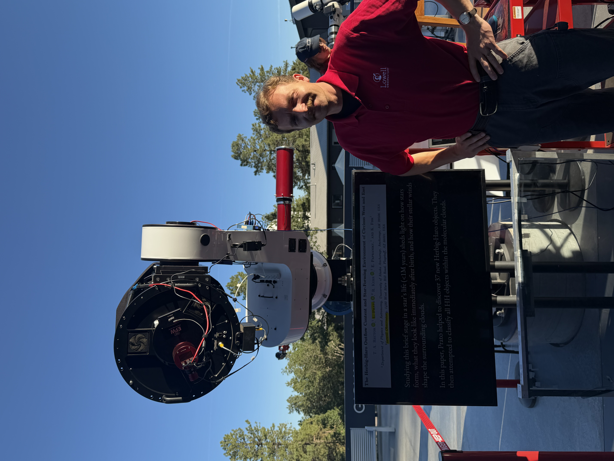
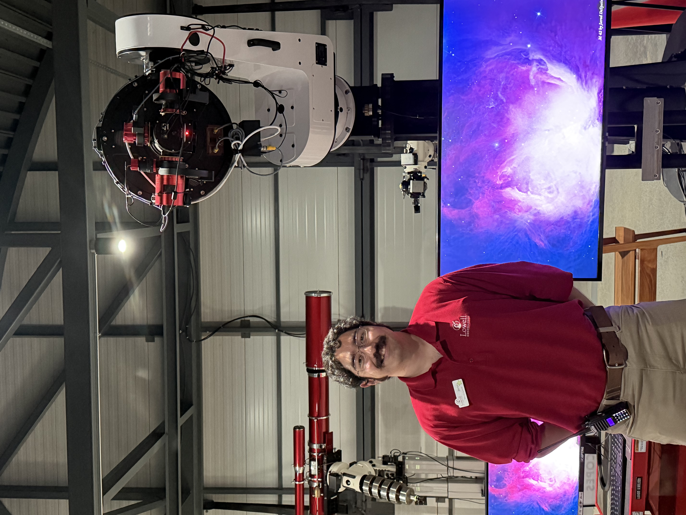

Dylan Short
Dylan Short is a long time astrophotographer with over 10 years of experience in the field. He is the lead instructor for our astrophotography courses.

Lowell Observatory
Learn the art of astrophotography with our comprehensive courses.
Our team of astrophotographers are highly trained and passionate about astronomy and are here to help you in your journey to becoming an astrophotographer.

Dylan Short is a long time astrophotographer with over 10 years of experience in the field. He is the lead instructor for our astrophotography courses.

Ryan Mayberry is a skilled astrophotographer with a passion for capturing the beauty of the night sky. He brings his expertise in image processing and equipment setup to every course.

Louis Maez is a talented astrophotographer who loves photographing planetary nebulae and appreciates the science behind them. He is dedicated to sharing his knowledge and helping students achieve their astrophotography goals.

Jarod Despain is a passionate astrophotographer with a focus on deep-sky objects. He is committed to providing students with the skills and knowledge needed to capture stunning images of the universe.
John Rachlin is always looking for new targets to photograph and shares his knowledge with students.